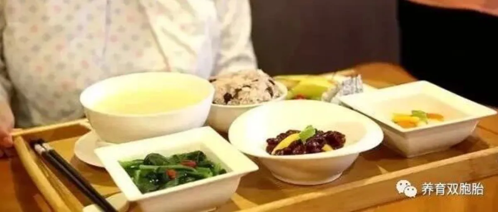
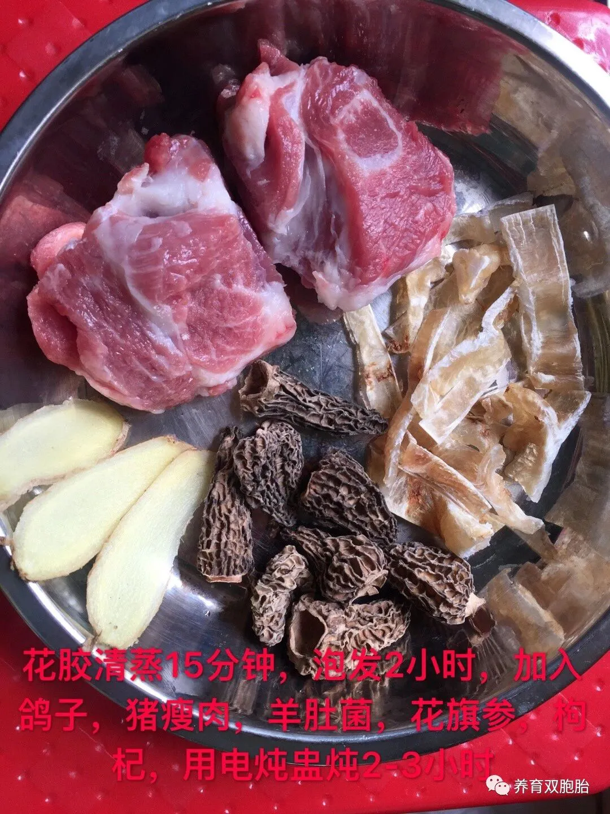
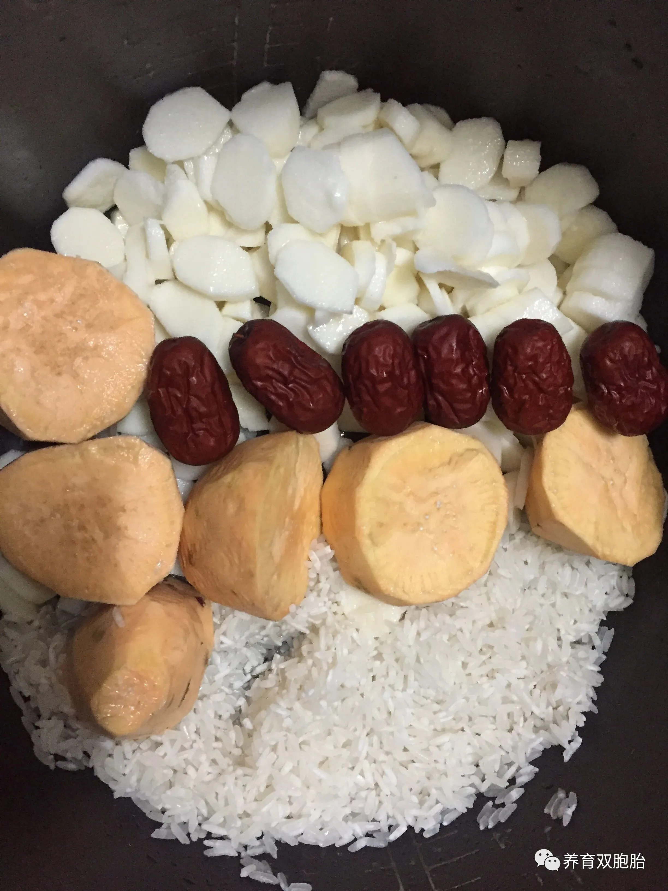
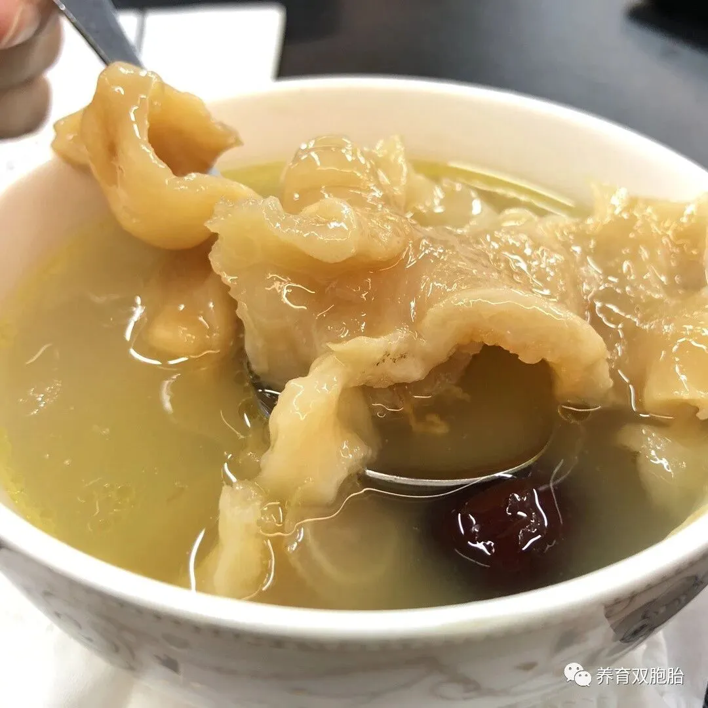
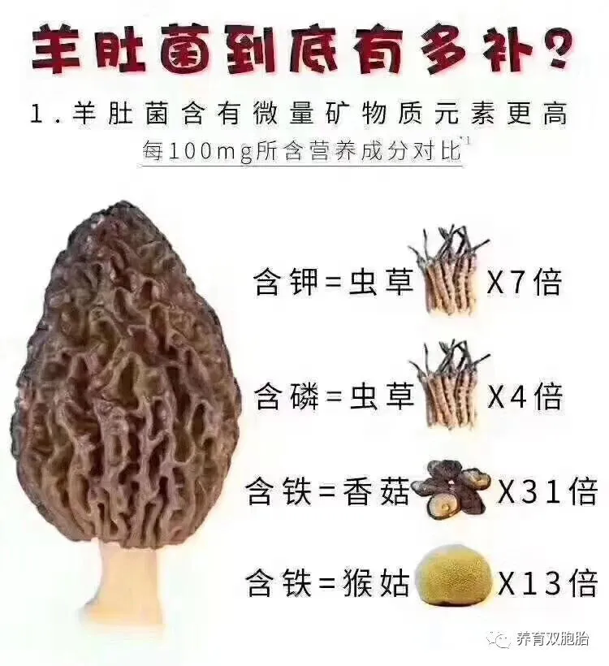
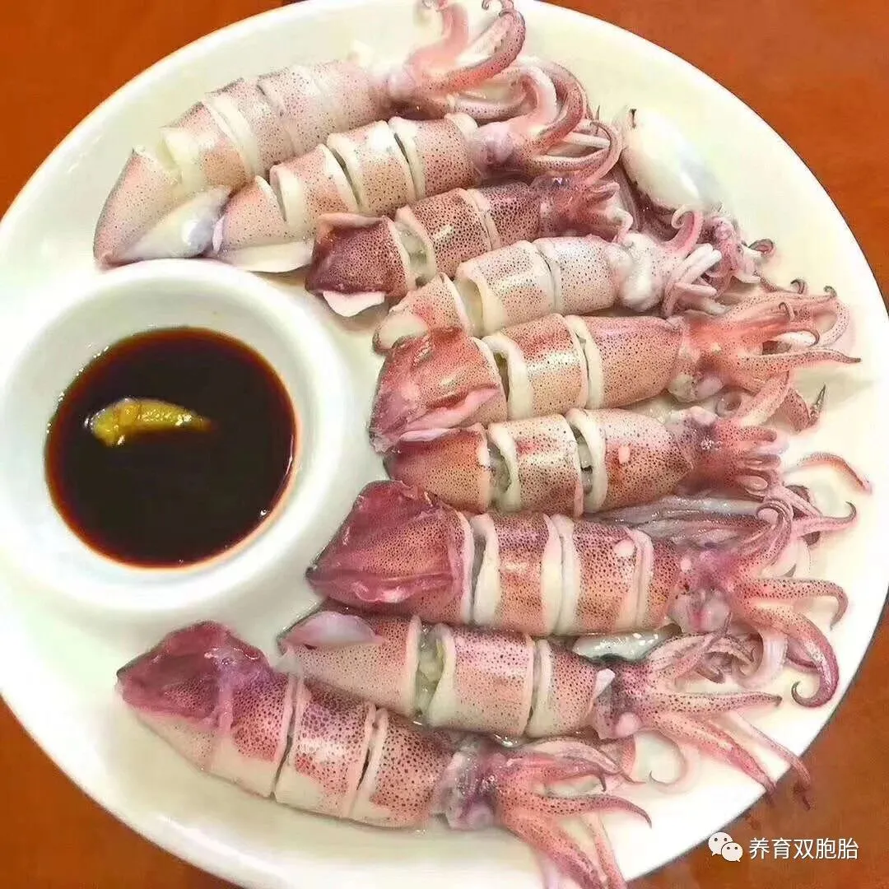
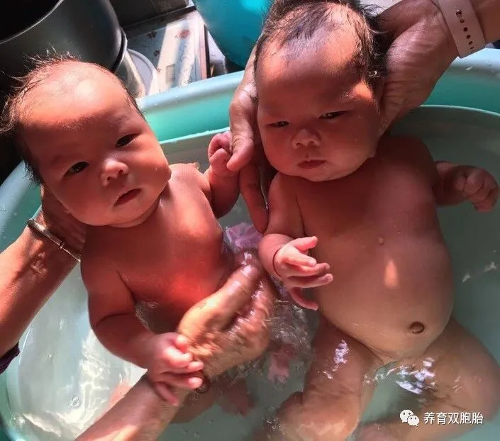
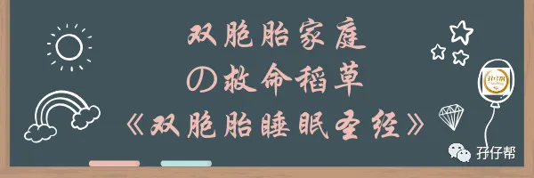

图文|双胞胎奶爸,美食达人兼平安银行专业保险师
· 正 · 文 · 来 · 啦 ·
大家好，我是小林爸爸，家有双胞胎姐妹花，目前3个多月了！
在两宝宝22天时，曾经写文《当了21天双胞胎姐妹花的爸爸：我不痛，依然快乐着》给大家分享我初为双胞胎爸爸的一些体验，文中有提到我的月子餐心得。
很意外的是，大家都对我的月子餐很感兴趣，作为一个曾经当过十年的厨师，能得到大家的认可，我深表安慰，感谢抬爱！
受圆圈妈妈的邀请，今天发文继续分享我的月子餐心得。
首先说说宝妈目前的情况。
她待产前体重138斤，产后3个月恢复到99.9斤，除了胸围升级变大，其他身体部位如胳膊，大腿，小腹…均回归到少女时期凹凸有致，婀娜多姿的状态。
两个宝宝的体重也很给力，3月龄例行体检，体重11斤，属于中上级别的水平。
宝妈的月子餐以及产后3个月的饮食，都是我亲自负责，我一直认为，宝妈的产后恢复如此迅速和两宝宝棒棒哒的体重离不开科学均衡的饮食。
在此，我想围绕产妇的饮食，分享我的经验给各位双胞胎爸爸妈妈参考。
【01】
产后三个月的饮食原则
第一周：小米粥，少吃多餐
让宝妈每天喝小米粥，买个保温瓶装着，饿了就倒一些出来喝，一天五六餐即可。
产后第三天，在得到医生确认可吃猪肉后，可开始吃益母草+瘦肉末汤，这一道汤可帮助产妇排空留在体内的恶露。
产后排毒和排便比吃啥补品都重要！重要的事情说三遍！
第二周：以温补为主
推荐鱼肉粥：首选乌鱼，鲈鱼和中山鲩鱼。
注意：起锅时，要把所有浮在上面的油全部刮干净
ℹ温馨提示：喂母乳的宝妈，避免吃黄色的食品，如南瓜，玉米，胡萝卜，黄骨鱼…因为很多宝宝的黄疸指数上升与宝妈的母乳质量有直接影响。
如果发现小宝宝黄疸高，可以暂停母乳喂养3天，以配方奶代替，喝点益生菌水，多晒太阳，多拉多排便。
只要不是病理性的黄疸偏高，基本上持续半个月左右，就能自然降下来。
第三周：以热补为主
推荐这款热补汤：花胶+羊肚菌+鸽子+瘦肉+花旗参+枸杞，坚持吃一个月。
每天下午补充一些甜品，如鸽子蛋+小汤圆，云耳+冰糖+紫薯，红糖糯米粥。
第四周：以高热量高蛋白为主
如羊肉炖汤。
每天的美食清单也有很多选择，如胡椒粒炖猪肚鸡（记得刮油后才吃），水煮鸡蛋（两个为宜），新鲜牛肉（半斤足以）
第五周：以高档补品为主
推荐这款大补汤：选优质的陈年鳕花胶，晚上隔水炖好，早上当早餐吃，因为晚上吃花胶，容易变胖哦！
少吃高碳水化合物的食品，如米饭，面条，包子…宜多吃富含纤维素食品，这样可以帮助排便，早日瘦身成功。
第六周：以海产品为主
多吃深海鱼，搭配少许青菜，注意：性质寒凉的青菜不能吃，以免宝宝喝了母乳拉肚子。
第七周：以鸡肉鸭肉猪肉为主
再推荐这款汤：羊肚菌+鸽子汤，可增强宝妈的抵抗力，宝宝也能通过喝母乳增强自身抵抗力。
鸡肉，建议吃1/3就好，不可贪多哦！
第八周：以补铁为主
补铁食物有：鸭血，猪肝，牛肉，菠菜…
以上食物均可以按照实际需求自由混搭，每餐吃一样即可。
第九周：以补钙为主
吃虾是通过食补补充钙的直接且最有效的方式，每天吃半斤虾，或者用虾皮包水饺调馅料。
不喜欢吃虾的宝妈可以吃清蒸排骨或者鱼头豆腐汤，还可以辅助药补，吃一些钙片。
第十周：恢复正常饮食
想吃啥就买啥，建议适量多吃一些新鲜蔬菜，菌菇类食物和豆制品。
当然，为了优质母乳的产出，寒凉食品依然吃不得！
第十一周：多吃五谷杂粮
可补充孕期缺失的微量元素和维生素。
至于女人们都爱吃的水果，除了性质寒凉的水果不能吃，其他的，请尽管敞开肚皮吃吧！
一言以蔽之！
双胞胎妈妈怀孕到生产，能量消耗大，再加上剖腹产，身体会被过度掏空，非常不容易啊！
作为一名双胞胎爸爸，真心呼吁宝爸们，应格外重视宝妈在月子期间的饮食！帮助宝妈尽快恢复元气！
另外，再说说月子期间的其他注意事项
许多妈妈坐月子期间为了增加奶量，会被逼着吃各种油腻腻的猪脚汤。真心不建议，猪脚油脂过高，反而容易堵奶。
有些地区还提倡喝月子酒，虽然度数不高，但是喂母乳期间喝酒，容易导致宝宝的黄疸指数不降反升。
没有必要吃燕窝。首先，假货太多，其次，即便是真货也没多大用处，还不如每天坚持吃两顆水煮鸡蛋。
【02】
写在最后的话
起初，我很担心宝妈的奶水不够，实际上是，宝妈的母乳很充足。
用电动挤奶器，单边可以挤奶220毫升，双边可挤出400毫升，完全可以满足两宝宝的口粮。
有时候，喝不完的母乳倒掉可惜，我就用剩余的奶做一杯纯天然的奶茶！以奖励自己这么些时日来的亲力亲为。
养育双胞胎的滋味很酸爽，极度缺觉，每天像陀螺一样打转，忙着给各位群友妈妈们解答各种少儿健康险，还要给自己家的三位姑娘们鞍前马后…
但由始至终，我的心里只有感恩！
两位小情人并不像传说中那么难带，基本上就是吃了就睡，睡醒了哭着吵奶喝，身高体重都能达到同龄宝宝的水平。
更让我欣慰的是，姐妹两不像某些睡渣宝宝那样日夜颠倒，从3月龄开始，她们的睡眠作息基本上规律化：晚上十二点喝完120毫升奶，可以一觉睡到早晨六点半才醒来，接着喝母乳后，还能继续睡到上午十点半。
当然，还有我的大情人，孩子们的妈妈，看到她丝毫不为养娃育儿的琐事担忧焦虑，每天都神采飞扬的样子，我更加觉得自己所做的一切都很值得！
男人一生最好的投资不是房，不是金，不是股票，而是一个对的女人！
感恩，遇见你，我的大宝贝，你是我人生最好的投资，没有之一。
以上是我养育双胞胎的一些拙见，与君共勉，谢谢大家。
对文中提到的月子餐做法有任何疑问的，可随时联系我（微信号18529513419）。
当然我还不止会做月子餐，作为一个专业的平安银行专业保险师，关于宝宝的健康险规划，我也能给到您一个靠谱专业的答案。
-END-
今日互动话题
#你的月子餐，吃得好吗？#
评论区聊一聊
说说你的经历吧
一好文推荐一
一加入社群一
一关注孖仔帮一
点击“阅读原文”，直达双胞胎育儿网站www.sgguy.com.
喜欢这个月子餐吗？，请点“在看”








